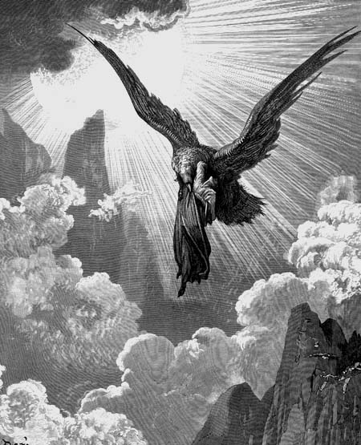
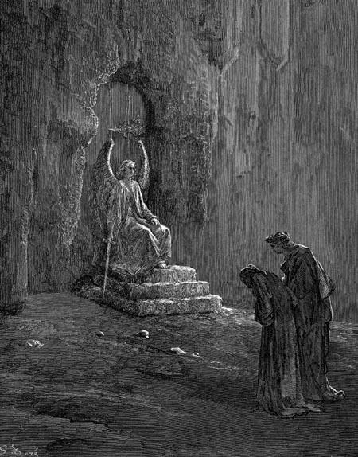

Canto IXPrimeiro sonho - Sta. Luzia - Porta de São Pedro
|
|  |
| O sonho da águia. Ilustração de Gustave Doré (século XIX). |
- Não temas - disse o meu senhor - que nós estamos no caminho certo. Chegamos enfim ao Purgatório. Esta vendo esta beirada que percorre todo o monte? Ali, no final, está o portão por onde deveremos entrar. Antes do amanhecer, enquanto dormias, veio até nós uma mulher que disse: "Eu sou Luzia. Deixe-me levar este que dorme, para ajudá-lo em sua via". Sordello e os outros ficaram. Ela te pegou nos braços e o trouxe até aqui, e eu segui logo atrás. Antes de ir, ela me mostrou a entrada, e quando ela partiu, levou embora o teu sono.
Como alguém que em dúvida se tranqüiliza quando a verdade lhe é revelada, assim ocorreu comigo. Quando o mestre me viu sereno, ele se levantou e saiu caminhando pela beira. Eu me levantei também, e o segui.
Chegamos até o local que eu antes pensara ser uma rachadura na pedra. Lá, depois de de três degraus de cores diversas, havia uma porta. No mais alto degrau estava um porteiro, calado. Eu não consegui mirá-lo, pois o clarão que emanava do seu rosto me ofuscava. Brilhava tanto quanto o Sol, que refletia na espada nua firme na sua mão.
- Dizei, daí mesmo de onde estais, o que quereis? - ordenou o anjo - Onde está vossa escolta? Cuidai para que não vos arrependeis de ter vindo aqui.
- Uma mulher do céu - respondeu o mestre - há pouco tempo atrás, nos disse "Lá está a porta. Ide até ela.".
- Que ela então continue a vos guiar - continuou o porteiro -. Vinde, então, e subi nossos degraus.
Nós obedecemos. O primeiro degrau era branco e de um mármore tão claro que nele me vi refletido. O segundo era mais escuro que pez e era feito de pedra áspera, com várias rachaduras na sua superfície. O terceiro e último me pareceu ser de pórfiro flamejante, tão rubro quanto sangue vivo que jorra de uma veia. E era neste degrau que o anjo de Deus pousava seus pés e se sentava numa soleira que parecia uma pedra de diamante.
|  |
| A entrada do Purgatório. Um anjo guarda a Porta de São Pedro. Ilustração de Gustave Doré (século XIX). |
O mestre me guiou pelos três degraus, e disse:
- Pede-lhe, humildemente, para girar a chave para ti.
Devotadamente, me ajoelhei diante do anjo, bati no peito três vezes e pedi misericórdia para que a porta ele abrisse para mim.
Sem que eu sentisse nada, ele tomou a espada e desenhou sobre a minha testa sete feridas em forma de "P", e disse:
- Entrando aqui, não deixes de lavar estas feridas.
Depois buscou, dentro de sua roupa cor de terra, duas chaves. Uma era de prata e a outra, de ouro. Primeiro ele girou a chave branca e depois, a amarela, e então, a trava da porta foi aberta.
- Quando qualquer uma dessas duas chaves falha, a estrada para o Purgatório permanece fechada. Uma é mais preciosa mas a outra requer arte e engenho para que destrave. Eu guardo estas chaves que pertencem a Pedro. Ele me ensinou que, para aqueles que se postarem diante dos meus pés, é melhor errar em abri-la do que mantê-la fechada.
Depois, abrindo finalmente a porta sagrada, ordenou:
- Entrai, mas lembrai-vos que para cá retorna aquele que olhar para trás.
E ouvi ranger os pinos das dobradiças daquele portão. O doce som do metal se misturou a um coro, que ocupou meus ouvidos logo que entrei: "A vós louvamos, Ó Senhor", pareciam cantar, acompanhados pela suave melodia dos metais.